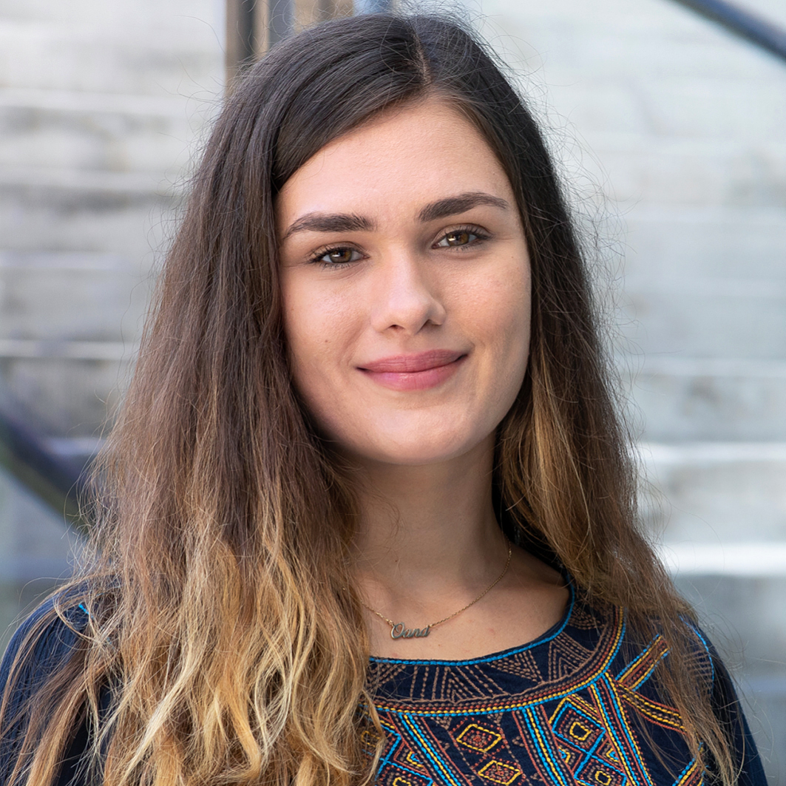

Biological Physics · Data-Driven Research · Basel
Andreea-Oana Chelban
PhD student in Biological Physics at the Biozentrum, University of Basel, studying bacterial multicellular development through microscopy, quantitative image analysis, computational modelling and data-driven approaches.

Research Focus
I work on the data-driven analysis of bacterial swarms, combining automated microscopy, image and time-series analysis, computational modelling and deep learning for single-cell segmentation and tracking.
Research Experience
PhD Project: Data-Driven Analysis of Bacterial Swarms
- Analysed large-scale microscopy datasets.
- Designed automated microscopy workflows.
- Developed Matlab analysis pipelines.
- Applied deep learning for segmentation and tracking.
Master Project: Pattern Formation and Synchronisation
- Developed reaction-diffusion models.
- Studied oscillatory dynamics and synchronisation.
Education
PhD Student in Biological Physics
Master of Science in Physics
Bachelor of Science in Physics
Skills
Work Experience
Webmaster of the LS Frey Website
- Managed and maintained the research group website.
- Implemented HTML updates and content changes.
HR Internship
- Coordinated candidate outreach and interviews.
- Conducted first-round assessments.
Teaching, Leadership & Service
- Co-developed Physics of Life lecture materials.
- Mentored Bachelor and research students.
- Organised computational biology course modules.
PhD Representative
Organised interdepartmental networking events for PhD students.
Contact
Email: andreea.chelban@unibas.ch
Phone: +41 77 278 72 77
Basel, Switzerland
GitHub: github.com/andreeachelban